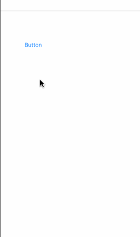
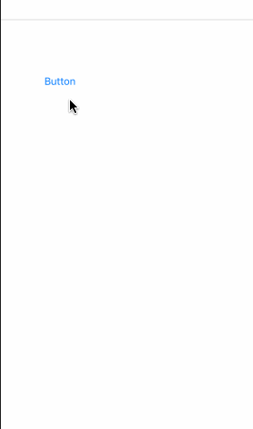
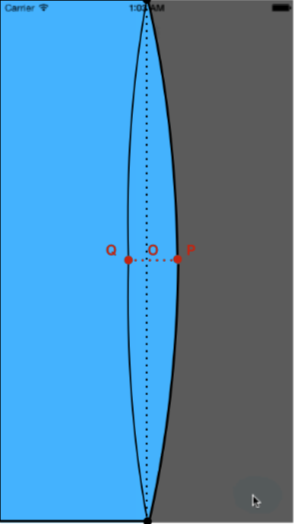
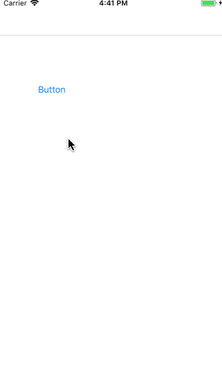

####写在开篇
惯例开头要说点什么，本篇是写一个还挺有意思的侧边栏动画，其中也运用到了贝塞尔曲线，算是贝塞尔曲线相关的第二篇，但是又在里面添加了一些新的东西
####最终效果

按照我做动画的普适规律，先来拆解它，首先一个淡蓝色的view从左边移入，并带有边界弯曲和回弹，而按钮则是按次序显示出来。上面图看起来有点快了，我来把它放慢，仔细查看

####拆解过程
添加view
首先创建一个自定义view ，为了避免被遮挡，我添加到window上，
1 | let frame = CGRect.init(x: -kWindow.frame.size.width / 2 - options.menuBlankWidth, y: 0, width: kWindow.frame.size.width / 2 + options.menuBlankWidth, height: kWindow.frame.size.height) |
注意menuBlankWidth参数，这里先略下 ，后面会说明这个参数的作用，设置动画让view显示出来就可以了
1 | UIView.animate(withDuration: 0.3) { |
#####边界曲线
这里会用到DisplayLink和贝塞尔曲线，贝塞尔曲线前面已经介绍过，这里说下DisplayLink，简单地理解，CADisplayLink就是一个定时器，每隔1/60秒（16.67ms）刷新一次屏幕。使用的时候，我们要把它添加到runloop中，并给它绑定一个target和selector，才能在屏幕1/60秒刷新的时候实现调用绑定的方法，具体文档可在搜索引擎搜索了解。
由于CADisplayLink绑定的方法会在每次屏幕刷新时被调用，精确度相当高，正是基于这个特点，CADisplayLink非常适合UI的重绘。
我们的目标是在CADisplayLink绑定的方法中实现重绘，这里我们就用上篇文章讲的贝塞尔曲线，而且只需要一个控制点，下图中红色的点表示控制点，黑色的两个点表示唯一一条贝塞尔曲线的两个端点，其余线段均用直线连接。

接下来的问题就是控制红点的运动，当menu弹出时，红点先从o点运动到p点，再从p点运动到q点，最后从q点运动到o点；反之，当menu隐藏时，o -> q -> p -> o，这也就是一组变化的数值。
#####变化的数值
所以我们的目标很明确，就是需要产生一组变化的数值，这个数值满足上面所述的先递增再递减的规律，这里我来添加两个辅助视图，设置起点和终点都一样，利用弹性动画天生的回弹特性，我们只要赋予两个辅助视图以不同的动画参数，并且实时计算出两个辅助视图的横坐标x之差，就可以间接地得到一组从o增至一个正数后，递减至一个负数最后再回到o的数据

我是如何让辅助视图有反弹效果的
1 | UIView.animate(withDuration: 0.7, delay: 0.0, usingSpringWithDamping: 0.5, initialSpringVelocity: 0.9, options: [UIView.AnimationOptions.beginFromCurrentState,.allowUserInteraction], animations: { |
我是如何计算diff的值
1 | let sideHelperPresentationLayer = helperSideView.layer.presentation() |
我是如何绘制矩形的
1 | override func draw(_ rect: CGRect) { |
#####按钮的变化
1 | private func animateButtons() { |
其中usingSpringWithDamping 阻尼系数 会影响到按钮隐藏效果，delay时间的不同会有按钮的渐进效果。
####总结
本篇我的思路不是很成熟，被限制了 写的比较死板，代码也没有放到github上，示例也没有什么难点
未完待续
参考链接：
Recreating Skype’s Action Sheet Anima-tion
__END__

文章出处：A Guide To iOS Animation （二）GooeySlideMenu
作者签名：所有伟大的事情都源于梦想，始于微不足道.
关于主题：Hexo - Live For Code
版权声明：文章除特别声明外，均采用 BY-NC-SA 许可协议，转载请注明出处